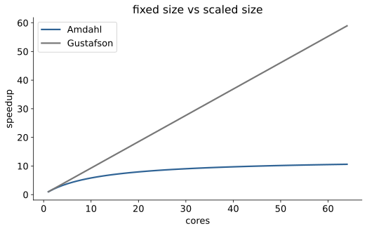
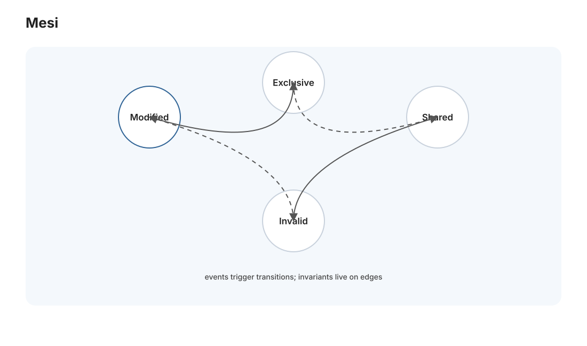
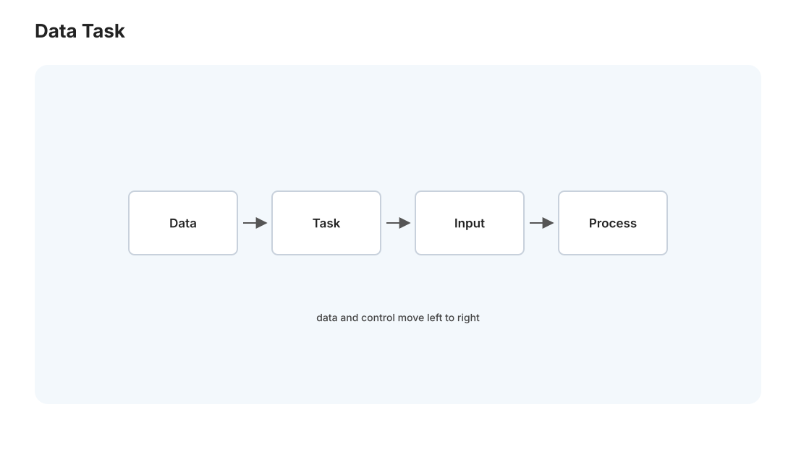

并行 I · 并行模型与缓存一致性
对标：CMU 15-418 / Berkeley CS267 ｜ 前置：perf-01（Amdahl）、os-02（并发）、csapp-02（缓存） perf 线在单核上榨性能，到了极限就得用多核。但并行不是"加核就快"——它有自己的定律（Amdahl/Gustafson）、自己的硬件现实（缓存一致性）、自己的编程模型。这一页建立并行的世界观：并行的加速上限在哪、多核共享内存底下的缓存一致性怎么运作、以及数据并行 vs 任务并行的划分。这是走向 GPU（gpu 线）和 MLSys（mlsys 线）的地基。
1. 并行的加速上限：Amdahl vs Gustafson

Amdahl 定律（perf-01 的并行版）：程序中串行部分占比 \(s\)，用 \(N\) 核，加速比 \(\le \frac{1}{s + (1-s)/N}\)。残酷推论：只要有 5% 串行部分，无论多少核，加速比不超过 20×。串行瓶颈是并行的天花板——这解释了为什么"加核收益递减"。
Gustafson 定律（乐观的另一面）：实践中问题规模常随核数增长（更多核就处理更大数据）——此时可并行部分随规模扩大、串行占比相对缩小，加速接近线性。"固定问题看 Amdahl（悲观），扩展问题看 Gustafson（乐观）"——两者不矛盾，是看问题规模是否固定。ML 训练就是 Gustafson 的胜利：更多 GPU → 训更大模型/更大 batch。
关键认知：并行前先问"串行部分是什么、能否消除"——同步点、共享资源争用（os-02 锁）、不可并行的数据依赖，都是串行瓶颈。减少串行比增加核数更重要。
2. 缓存一致性：多核共享内存的底层魔法

多核各有自己的 L1/L2 缓存（csapp-02），却共享同一主存——如果核 A 改了变量 x（在它的缓存里），核 B 缓存里的旧 x 怎么办？ 这就是缓存一致性（cache coherence）问题，由硬件协议（MESI）解决：
- MESI 协议：每个缓存行有四态——Modified（我改过，独占）/ Exclusive（只我有，没改）/ Shared（多核共享只读）/ Invalid（失效）。核要写一个行，先让其他核的该行失效（invalidate），取得独占后再改。
- 代价——一致性流量：多核频繁读写同一缓存行 → 大量失效消息在核间飞 → 性能暴跌。这正是 os-02/csapp-02 说的伪共享的硬件根源：两个线程改同一行的不同字节，硬件不知道它们无关，照样来回失效。
- 内存序（memory ordering）（os-02 埋的坑）：为性能，CPU 允许一定的重排——一个核的写，别的核看到的顺序可能不同。这就是为什么无锁编程要内存屏障精确控制可见性（par-02 细讲）。
读法：共享内存并行的"共享"是有硬件成本的幻觉——理解 MESI，你就懂了"为什么线程私有数据要对齐到缓存行""为什么争用同一个原子计数器不 scale"。多核性能的很多坑都在这条缓存一致性总线上。
3. 并行的两种分解

把工作拆给多核，两种基本模式：
- 数据并行：同样的操作作用于大量数据的不同部分（数组每段一个线程、矩阵每块一个核）——规整、易扩展、GPU 的天下（gpu 线）。SIMD（perf-01）是数据并行的指令级版，GPU 是它的大规模版。
- 任务并行：不同的任务并行做（一个线程解码、一个渲染、一个 I/O）——不规整、靠任务调度。
分治天然并行（🔗 algo-01）：归并排序左右两半可并行、MapReduce（dist-03）是数据并行的分布式版。识别"哪部分是数据并行"是并行化的第一步——数据并行好扩展，优先找它。
4. 共享内存并行编程模型
在多核上写并行代码的几种抽象：
- 线程 + 锁（os-02）：最底层、最灵活、最易错（竞态、死锁）。
- OpenMP：
#pragma omp parallel for一行把循环并行化——声明式、适合数据并行的规整循环，科学计算常用。 - 任务并行库（TBB、Cilk、Rust rayon）：你描述任务和依赖，运行时用工作窃取（work-stealing）调度器自动负载均衡——空闲线程从忙线程"偷"任务，优雅解决负载不均。
- 消息传递（MPI）：不共享内存，进程间显式发消息——多机集群的模型（HPC 超算、跨节点，与 dist 线相通）。
选择：规整数据并行用 OpenMP/GPU、不规则任务用工作窃取、跨机器用 MPI。"共享内存 vs 消息传递"是并行编程的两大哲学——前者方便但受限于单机 + 一致性成本，后者可扩展到千万核但要显式通信。
5. 练习与要点
例 1（Amdahl 算天花板） 程序 90% 可并行，无限核的加速上限？（\(1/0.1 = 10×\)）——"10% 串行就锁死在 10× 以内"，理解为什么要死磕串行部分。
例 2（伪共享复现） 4 线程各累加一个数组的相邻 4 元素（同缓存行）vs 各隔 64 字节——后者快数倍。用 perf 看缓存一致性流量。MESI 的代价亲手可测（也是 os-02 例 3 的硬件解释）。
例 3（找数据并行） 给"图像每像素做 gamma 校正""快排""网页服务器处理请求"分类到数据并行/任务并行——培养"这活儿怎么拆给多核"的直觉，并行化的第一判断。\(\blacksquare\)
下一页：并行 II——同步原语与无锁结构：原子操作、内存序，以及不用锁也能正确并发的深水区。